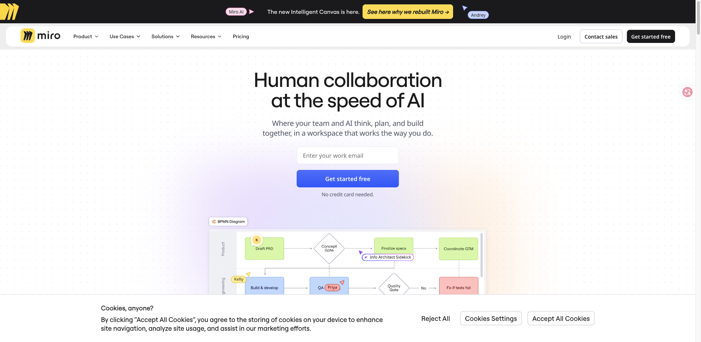

无限在线白板，工作坊、流程图、路线图都放一张画布。
一张「产品启动工作坊」白板：便签、手写标题、粗蓝箭头与实时协作光标
Miro 的视觉语言：点阵画布上贴彩色便签，手写体标题圈出讨论区，粗蓝箭头把话题连起来；协作光标带名字标签，告诉你“还有谁在这张板上”。

一张无限大的在线白板：工作坊、流程图、回顾、路线图都放在同一张画布上，模板覆盖团队反复要开的那些会。
核心能力是“一起想”——多人实时协作、评论、演示模式、计时器，再往外接各种模板与集成。